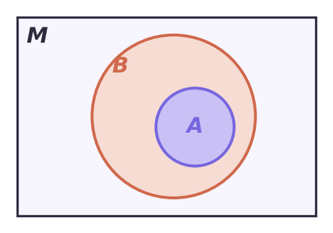

Теория
Предикат — утверждение с переменной
Утверждение «n — простое число» не является высказыванием: пока не сказано, чему равно n, нельзя ответить, истинно оно или нет. Но если подставить n = 7, получится истинное высказывание, а при n = 8 — ложное. Такие утверждения, зависящие от переменных, называют предикатами.
Пишут: A(n) ≡ {n — простое число}, C(y) ≡ {|y| ≤ 2}, D(x; y) ≡ {x + y = 1}. В скобках — переменные, от которых предикат зависит. A(7) — истинное высказывание, C(5) — ложное, D(0; 1) — истинное.
Если переменная берёт значения из множества M, говорят, что предикат задан на множестве M (это его область определения). Так, A(n) задан на N, C(y) — на R.
Множество всех тех и только тех элементов из M, при которых предикат A(x) превращается в истинное высказывание, называют областью истинности предиката и обозначают той же буквой: A.
Найти область истинности — это, по сути, решить уравнение или неравенство. Для C(y) ≡ {|y| ≤ 2} на R: C = [−2; 2].
Если область истинности совпадает со всем M, предикат тождественно истинный; если она пуста — тождественно ложный. На R: {x − x = 0} — тождественно истинный, {x² + 1 = 0} — тождественно ложный.
Предикаты A(x) и B(x) называют равносильными, если их области истинности совпадают: A = B. Пишут A(x) ≡ B(x).
Например, {x³ ≥ 0} ≡ {|x| = x} на R: у обоих область истинности [0; +∞).
Операции над предикатами — это операции над множествами
Логические операции переносятся на предикаты. Пусть A(x) и B(x) заданы на M и имеют области истинности A и B. Главная мысль урока: каждой логической операции соответствует операция над множествами.
| Предикат | Читают | Область истинности | В задачах это |
|---|---|---|---|
| A(x) ∧ B(x) | «и» | A ∩ B | система |
| A(x) ∨ B(x) | «или» | A ∪ B | совокупность |
| A(x) | «не» | M \ A | дополнение |
| A(x) ⇒ B(x) | «если …, то» | (M \ A) ∪ B | ложно только там, где A верно, а B нет |
| A(x) ⇔ B(x) | «тогда и только тогда» | где оба истинны или оба ложны |
Почему импликация даёт (M \ A) ∪ B? Импликация ложна только при «1 ⇒ 0», то есть в точках, где A(x) истинен, а B(x) ложен — это A \ B. Все остальные точки M входят в область истинности. В частности, если A ⊂ B, то область истинности A(x) ⇒ B(x) — всё M: в A нет точек, не лежащих в B.

На R заданы A(x) ≡ {x ≥ −1} и B(x) ≡ {x < 3}. Найди области истинности предикатов A(x) ∧ B(x), A(x) ∨ B(x), A(x), A(x) ⇒ B(x).
A = [−1; +∞), B = (−∞; 3).
- A(x) ∧ B(x): A ∩ B = [−1; 3) — это решение системы −1 ≤ x < 3;
- A(x) ∨ B(x): A ∪ B = R — любое число либо ≥ −1, либо < 3;
- A(x): R \ A = (−∞; −1), то есть {x < −1};
- A(x) ⇒ B(x): ложно, где x ≥ −1 и x ≥ 3, то есть на [3; +∞). Область истинности — (−∞; 3).
Отрицание {x > 5} — это {x ≤ 5}, а не {x < 5}: граничная точка 5 переходит в отрицание. Отрицание {x ≥ −1} — {x < −1}.
Кванторы
Часто нужно сказать: «предикат истинен для всех x из M» или «существует хотя бы одно x из M, при котором он истинен». Для этого есть знаки:
- ∀ — квантор общности (перевёрнутая A от англ. All): «для любого», «для каждого»; запись (∀x ∈ M) A(x);
- ∃ — квантор существования (перевёрнутая E от Exists): «существует», «найдётся»; запись (∃x ∈ M) A(x).
Квантор превращает предикат в высказывание. Для A(x) ≡ {|x| > 0} на R: (∀x ∈ R) A(x) — ложно (не подходит x = 0), (∃x ∈ R) A(x) — истинно.
Выясни истинность высказываний: а) (∀x ∈ R) x² + 1 > 0; б) (∃x ∈ R) x² < 0; в) (∃n ∈ N) n² = 2n; г) (∀n ∈ N) n² > n.
- а) истинно: x² ≥ 0, значит x² + 1 ≥ 1;
- б) ложно: квадрат не бывает отрицательным;
- в) истинно: достаточно одного примера, n = 2: 4 = 4;
- г) ложно: достаточно одного контрпримера, n = 1: 1 > 1 неверно.
Виды теорем
Большинство школьных теорем устроено так: «для любого x из M из A(x) следует B(x)», то есть это истинное высказывание (∀x ∈ M) A(x) ⇒ B(x). A(x) называют условием теоремы, B(x) — выводом, описание M — разъяснительной частью.
Например, «если натуральное число делится на 6, то оно делится на 3»: M = N, A(n) ≡ {n ⋮ 6}, B(n) ≡ {n ⋮ 3}. Теорема верна именно потому, что A ⊂ B: все числа, кратные 6, кратны 3.
Из теоремы «если A, то B» можно построить ещё три:
| Название | Запись | Пример: «в треугольнике против равных сторон лежат равные углы» |
|---|---|---|
| прямая | A(x) ⇒ B(x) | против равных сторон — равные углы (верна) |
| обратная | B(x) ⇒ A(x) | против равных углов — равные стороны (верна) |
| противоположная | A(x) ⇒ B(x) | против неравных сторон — неравные углы (верна) |
| обратная противоположной | B(x) ⇒ A(x) | против неравных углов — неравные стороны (верна) |
Прямую и обратную теоремы называют взаимно обратными. Важно: обратная теорема может оказаться неверной, даже если прямая верна.
Прямая теорема и теорема, обратная противоположной, логически эквивалентны: (∀x ∈ M) A(x) ⇒ B(x) = (∀x ∈ M) B(x) ⇒ A(x). Это следует из равенства A ⇒ B = B ⇒ A для высказываний. На этом основан метод доказательства от противного.
Прямая теорема: «если натуральное число делится на 9, то сумма его цифр делится на 3». Сформулируй обратную, противоположную и обратную противоположной; какие из них верны?
- Обратная: если сумма цифр делится на 3, то число делится на 9 — неверна: у 12 сумма цифр 3, но 12 не делится на 9.
- Противоположная: если число не делится на 9, то сумма его цифр не делится на 3 — неверна: тот же контрпример 12.
- Обратная противоположной: если сумма цифр не делится на 3, то число не делится на 9 — верна, она эквивалентна прямой.
Заметь: обратная и противоположная тоже эквивалентны друг другу, поэтому они верны или неверны одновременно.
Необходимое и достаточное условия
Если верна теорема (∀x ∈ M) A(x) ⇒ B(x), то A(x) называют достаточным условием для B(x), а B(x) — необходимым условием для A(x).
Как запомнить: «достаточно» знать A, чтобы быть уверенным в B; а B «необходимо» для A: без B не бывает A. «Делиться на 4» достаточно, чтобы быть чётным; быть чётным необходимо, чтобы делиться на 4 (но не достаточно: 6 чётно, а на 4 не делится).
Если верны обе теоремы — прямая и обратная, — каждое условие является необходимым и достаточным для другого, и верно (∀x ∈ M) A(x) ⇔ B(x). Такие теоремы называют критериями. Формулировки: «тогда и только тогда», «необходимо и достаточно». Пример: натуральное число делится на 3 тогда и только тогда, когда сумма его цифр делится на 3.
Не перепутай направление. В «если A, то B» достаточное условие стоит после «если», необходимое — после «то». «x = 3» — достаточное условие для «x² = 9», но не необходимое: x = −3 тоже подходит.
Задачи урока
Реши в тетради. Ответы разберём на занятии.
Из учебника
- № 4.1 — Найти предикаты среди утверждений.
- № 4.2, 4.3 — Область истинности предиката на заданном множестве.
- № 4.4, 4.5, 4.7 — Области истинности конъюнкции, дизъюнкции, импликации.
- № 4.12, 4.13 — Истинность высказываний с кванторами.
- № 4.14, 4.15 — Обратная, противоположная и обратная противоположной теоремы.
Тест к уроку
Домашнее задание
№ 4.3, 4.6, 4.8, 4.13, 4.15 из учебника письменно. Найти в учебнике геометрии одну теорему-критерий и записать её в виде двух взаимно обратных теорем.